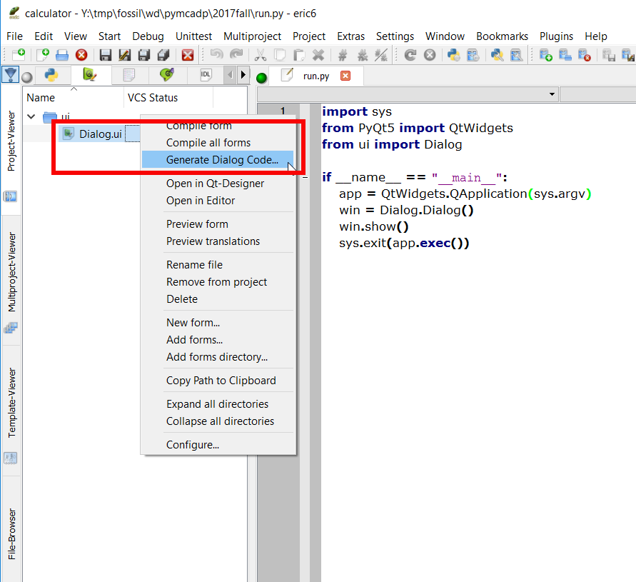
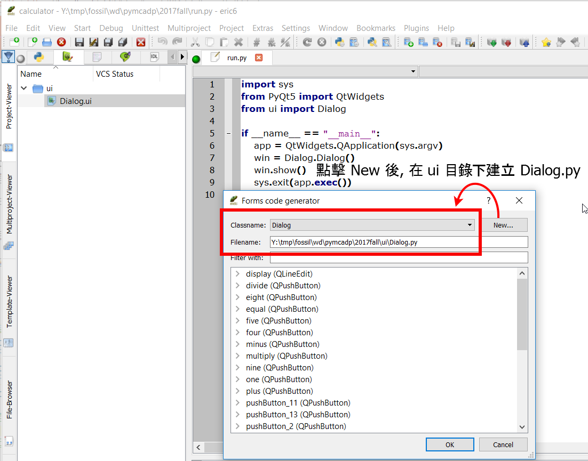

當使用者透過 Eric6 與 Qt Designer 完成基本計算機表單的視窗對話框後, 分別使用了 Qt Designer 中的 Grid Layout、Press Button 與 Line Edit 等 Widgets.
國立虎尾科技大學機械設計工程系計算機程式 - 一乙第十週第二部分, 說明如何利用 Eric6 建立簡單的計算機程式, 包含利用 Qt Designer 建立對話框, 並建立透過主程式引用執行. from 國立虎尾科技大學機械設計工程系 on Vimeo.
國立虎尾科技大學機械設計工程系計算機程式 - 一甲第十週第三部分, 說明如何開始利用 Eric6 與 Qt Designer, 建立計算機程式所需的對話框以及程式邏輯. from 國立虎尾科技大學機械設計工程系 on Vimeo.
接下來則必須配合 Dialog.ui, 在 Eric6 的表單頁面, 在 Dialog.ui 位置以滑鼠右鍵, 指定 Generate Dialog Code, 操作畫面如下:

接著點擊 New 後在 ui 目錄下, 建立 Dialog.py 檔案, 操作畫面如下:

之後與 Dialog.ui 編譯後的 Ui_Dialog.py 程式碼對應的 Dialog.py (可以自選 Generate Dialog Code 的檔案名稱 ,這裡選擇存為 Dialog.py), 將存放與對話表單相應的程式邏輯.
意即, 當用戶使用 Qt Designer 設計對話視窗表單後, 整體程式開發流程將分為 1) 以滑鼠產生對話框圖形介面與 2) 配合手動建立邏輯檔案等兩個流程, 由 Qt Designer 自動轉為 Ui_Dialog.py 程式碼的基本圖形介面建立流程, 使用者將不會手動編輯改變此一檔案的內容, 且主程式的模組導入則以手動建立的邏輯程式檔案為主.
例如: 上述位於 ui 目錄中的 Dialog.ui 編譯後, 得到 Ui_Dialog.py, 而與 Dialog.ui 對應的 Generate Dialog Code 所產生的 Dialog.py 檔案, 與主程式檔案 run.py 如下列所示:
run.py
# 導入 sys 模組, 主要用於 sys.argv 成員變數
import sys
# 從 PQt5 模組導入 QtWidgets 模組類別
from PyQt5 import QtWidgets
# 從 ui 目錄導入 Dialog.py, Python 程式檔案本身就是一個模組, 且文件名就是模組名
from ui import Dialog
# 每一個 Python 程式都可以直接被執行, 或者被導入其他程式中, 當成導入模組執行
# 假如程式檔案直接被執行時, 全域變數 __name__ 就會等於 "__main__" 字串
# 因此, 以下的判斷式的意思是, 若本檔案直接被執行時, 就會執行以下內縮程式區段
if __name__ == "__main__":
# 利用 QtWidgets.QApplication 類別建立案例物件, 且以 sys.argv 作為輸入
app = QtWidgets.QApplication(sys.argv)
# 利用所導入的 Dialog 模組中的 Dialog 類別建立物件案例, 對應的變數名稱設為 win
win = Dialog.Dialog()
# 執行 win 物件中的 show() 方法, 因為所有 Qt5 部件內定為不顯示
win.show()
# 執行 app 物件的 exec() 方法, 表示進入視窗事件重複迴圈, 等待使用者滑鼠輸入
# 將 app.exec() 當作 sys.exit() 執行輸入, 表示使用者可以透過視窗的 x 按鈕結束執行
sys.exit(app.exec())
Dialog.py 如下所示:
# -*- coding: utf-8 -*-
"""
Module implementing Dialog.
"""
from PyQt5.QtCore import pyqtSlot
from PyQt5.QtWidgets import QDialog
from .Ui_Dialog import Ui_Dialog
# Dialog 類別同時繼承 QDialog 與 Ui_Dialog 類別
class Dialog(QDialog, Ui_Dialog):
"""
Class documentation goes here. (若有類別相關說明文件內容, 放在此處)
"""
def __init__(self, parent=None):
"""
Constructor (類別建構子)
@param parent reference to the parent widget
@type QWidget
"""
# 利用 super 類別調用 parent 類別中的建構子
super(Dialog, self).__init__(parent)
# 上一行在 Python3 可以寫為 super().__init__()
# 利用 Ui_Dialog 類別中的 setupUi 方法, 以 self 視窗部件建立使用者介面
self.setupUi(self)
# 以上程式碼由 Eric6 表單頁面中的滑鼠右鍵, Generate Dialog Code 指令產生
# 當多個 signal 同時指向同一個 slot 處理時, 採用 for loop
num_button = [self.one, self.two, \
self.three, self.four, self.five, self.six, self.seven, self.eight, self.nine, self.zero]
# 用於產生加號與減號 signals 與 slots 用的數列
plus_minus = [self.plus, self.minus]
# 用於產生乘號與除號 signals 與 slots 用的數列
multiply_divide = [self.multiply, self.divide]
#self.one.clicked.connect(self.number)
# 數字按鍵的 signals 與 slots 設定
for i in num_button:
i.clicked.connect(self.number)
# 加減鍵的 signals 與 slogts 設定
for i in plus_minus:
i.clicked.connect(self.additiveOperatorClicked)
# 等於按鍵的 signal 與 slot 設定
self.equal.clicked.connect(self.equalClicked)
# 乘與除按建的 signals 與 slots 設定
for i in multiply_divide:
i.clicked.connect(self.multiplicativeOperatorClicked)
# 等待運算的加或減
self.pendingAdditiveOperator = ''
# sumSoFar 儲存運算流程中所累計的數值
# 當使用者按下 = 後, sumSoFar 重新計算並將數字顯示在 display 區
# 當使用者按下 Clear All, sumSoFar 將重置回 0
self.sumSoFar = 0.0
# 起始時, 等待使用者輸入運算數值變數為真
self.waitingForOperand = True
# sumInMemory 儲存計算機記憶體中的值, 配合 MS, M+, 或 MC 按鈕使用
self.sumInMemory = 0.0
# factorSoFar 暫存按下乘或除運算時的數值
self.factorSoFar = 0.0
# 等待運算的乘或除
self.pendingMultiplicativeOperator = ''
def number(self):
# sender() 為使用者點擊按鈕時送出的按鈕指標類別, 在此利用此按鍵類別建立案例
# 所建立的 clickedButton 即為當下使用者所按下的按鈕物件
clickedButton = self.sender()
# text() 為利用按鈕物件的 text 方法取得該按鈕上所顯示的 text 字串
digitValue = int(clickedButton.text())
# when user clicks 0.0
if self.display.text() == '0' and digitValue == 0.0:
return
# if under digit input process, clear display for the very first beginning
# waitingForOperand 為 True 已經點按運算數值按鈕
if self.waitingForOperand:
# 清除 display
self.display.clear()
# 將判斷是否已經點按運算數值按鈕的判斷變數重新設為 False
self.waitingForOperand = False
# 利用 setText() 設定 LineEdit 元件顯示字串, 利用 text() 取出目前所顯示的字串, 同時也可利用 text() 擷取按鈕物件上顯示的字串
#self.display.setText(self.display.text() + self.sender().text())
self.display.setText(self.display.text() + str(digitValue))
def additiveOperatorClicked(self):
# 確定按下加或減
clickedButton = self.sender()
# 確定運算子, 為加或減
clickedOperator = clickedButton.text()
# 點按運算子之前在 display 上的數字, 為運算數
operand = float(self.display.text())
# 納入乘與除之後的先乘除後加減運算邏輯, 且納入連續按下乘或除可累計運算
if self.pendingMultiplicativeOperator:
if not self.calculate(operand, self.pendingMultiplicativeOperator):
self.abortOperation()
return
self.display.setText(str(self.factorSoFar))
operand = self.factorSoFar
self.factorSoFar = 0.0
self.pendingMultiplicativeOperator = ''
# 假如有等待運算的加或減, 進入執行運算
# 且納入連續按下加或減時, 可以目前的運算數及運算子累計運算
if self.pendingAdditiveOperator:
if not self.calculate(operand, self.pendingAdditiveOperator):
self.abortOperation()
return
# 顯示目前的運算結果
self.display.setText(str(self.sumSoFar))
else:
# 假如 self.pendingAdditiveOperator 為 False, 則將運算數與 self.fumSoFar 對應
self.sumSoFar = operand
# 能夠重複按下加或減, 以目前的運算數值執行重複運算
self.pendingAdditiveOperator = clickedOperator
# 進入等待另外一個運算數值的階段, 設為 True 才會清空 LineEdit
self.waitingForOperand = True
# 處理使用者按下乘或除按鍵時的 slot 方法
def multiplicativeOperatorClicked(self):
clickedButton = self.sender()
clickedOperator = clickedButton.text()
# 將按鈕顯示的 text 轉為浮點數
operand = float(self.display.text())
# 若連續按下乘或除, 則以目前的運算數與運算子執行運算
if self.pendingMultiplicativeOperator:
if not self.calculate(operand, self.pendingMultiplicativeOperator):
self.abortOperation()
return
# 將目前乘或除的累計運算數顯示在 display 上
self.display.setText(str(self.factorSoFar))
else:
self.factorSoFar = operand
# 能夠重複按下乘或除, 以目前的運算數值執行重複運算
self.pendingMultiplicativeOperator = clickedOperator
self.waitingForOperand = True
def equalClicked(self):
# 從 display 取的運算數值
operand = float(self.display.text())
# 先乘除的運算處理
if self.pendingMultiplicativeOperator:
if not self.calculate(operand, self.pendingMultiplicativeOperator):
self.abortOperation()
return
# factorSoFar 為乘或除運算所得之暫存數值
operand = self.factorSoFar
self.factorSoFar = 0.0
self.pendingMultiplicativeOperator = ''
# 若有等待加或減的運算子, 執行運算
if self.pendingAdditiveOperator:
if not self.calculate(operand, self.pendingAdditiveOperator):
self.abortOperation()
return
self.pendingAdditiveOperator = ''
else:
self.sumSoFar = operand
self.display.setText(str(self.sumSoFar))
self.sumSoFar = 0.0
self.waitingForOperand = True
# 右運算數與等待運算子當作輸入
def calculate(self, rightOperand, pendingOperator):
# 進入計算流程時, 用目前輸入的運算數值與 self.sumSoFar 執行計算
if pendingOperator == "+":
self.sumSoFar += rightOperand
elif pendingOperator == "-":
self.sumSoFar -= rightOperand
elif pendingOperator == "*":
self.factorSoFar *= rightOperand
elif pendingOperator == "/":
if rightOperand == 0.0:
return False
self.factorSoFar /= rightOperand
return True
各變數的說明:
sumInMemory contains the value stored in the calculator's memory (using MS, M+, or MC).
sumSoFar stores the value accumulated so far. When the user clicks =, sumSoFar is recomputed and shown on the display. Clear All resets sumSoFar to zero.
factorSoFar stores a temporary value when doing multiplications and divisions.
pendingAdditiveOperator stores the last additive operator clicked by the user.
pendingMultiplicativeOperator stores the last multiplicative operator clicked by the user.
waitingForOperand is true when the calculator is expecting the user to start typing an operand.
當按下數字按鍵
當使用者按下計算機的數字按紐時, 透過 self.one.clicked.connect(self.number), 數字按鍵將會送出 clicked() 信號, 透過 connect(self.number) 會觸發 number() 方法槽 (slot) 的執行. 這種信號與槽的使用為 PyQt5 簡化事件導向程式建構流程的特有方式.
sender 在 Qt5 中為指標
當使用者按下計算機視窗程式中的按鍵時, 該 PyQt5 按鍵在 Qt5 程式庫中是利用 QObject::sender() 來傳送資料, 此函式將回傳 sender 作為 QObject 指標. 當 sender 為 Button 物件時, 此 sender 就是所按下的按鈕 QObject.
考慮使用者按下 0 鍵
處理數字按鍵的 slot 方法, 若目前 display 為 0, 而使用者又再次按下 0, display 不應該顯示 00, 而該只顯示 0. 另外, 若計算機視窗程式正處於等待使用者輸入新的運算數階段時, 在使用者按下新數值時, display 會清除先前顯示的數字, 只顯示新輸入的數值.
Comments
comments powered by Disqus